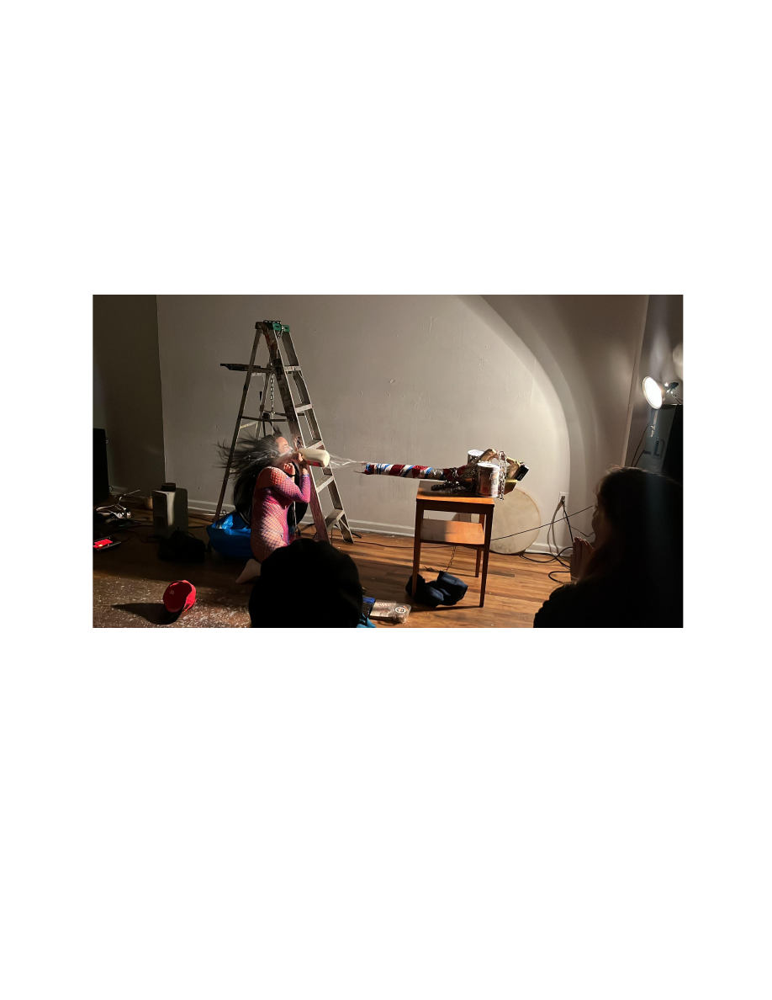

Interview with Oya Damla
By Femi Shonuga-Fleming
This interview happened in a park in brooklyn near new town radio.
As a sound /performance artist Oya Damla is interested in the process of art and sound making as healing modalities
and psychoanalytic inquiry, as well as the sonic experience as a transcendent state. Oya has studied and taught
various approaches to meditation and breath work drawing from her experiences in several meditation / vipassana
retreats and trainings. They are passionate about acquiring all forms of knowledge and sharing their experiences
with others as a teacher and healer.
When did you start performing?
Okay. So my first official public performance was in 2016.
And it was after an abortion that was caused by me hooking up with another performance artist. And prior
to that, I've been sort of more into the experimental music and new music scene when I first came to New
York. And that sort of took me into many different realms of art and experimental art. And I landed in
certain spaces where there was also performance art going on and new music. And, I got more and more
interested in performance because I was really annoyed with the musicality that was part of being a
musician, and I guess I can backtrack.
I did study music and dropped out of college early on, like, around 2006, 2007. And then I was really into
jazz. I played alto sax, really nerded out on that in my early years. And then when I moved to New York, I
was, like, oh, the avant garde is actually, like, really still happening. But it wasn't nearly as, I don't know,
prevalent now that you see all these shows happening, It was, like, very specific venues, and, I didn't even
know performance was really even happening. And then I met people in those fields, and I got really
inspired because my whole thing with music was that it just didn't give me enough of a medium to
express everything that I wanted to express. So performance became this sort of playground of concepts
and sound, and I was really interested in sound as a medium and not as a musical thing. So I started
making more, like, noise adjacent, experimental sound object performance. But it was very much also
inspired by, you know, a lineage of performance artists and expressive art and art brute and, just like very
primal in the moment expression. But usually it would be, like, leading up to something.
I wanted to ask you about the idea of “viceral” in performance art. I know you mentioned on your site
about expanding on idea of visceral nature in performance weather that be sonic or physical.
Yeah, so I guess there was a point where I'd gone to so many shows and you just watch these musicians
and, like, really rigid, like, sitting at a table or, like, really focused, and they're creating this amazing
beautiful work. But I was like, I want to see the body also involved in this, you know, or, like, there's this
desire of, I guess, boredom, which, you know, come it's a good boredom is great for, you know, creation.
Right? So I just got bored, and I was like, how can we make this more, yeah, engaging for the audience
where there's not such a separation of, like, the visceral experience of connecting with the humans in the
room. And I started thinking about objects, and I would go to performances and sometimes there'd be,
like, something being used or a visual that would elicit a memory in me and that would bring me deeper
into the moment. So I started thinking about how objects and even, like, spreading out the set and not

having it so much like this is the stage, this is the audience, and how that can be more of a visceral
experience. And then, yeah, I would, I use my body as an expressive tool to an extent, but it was mostly
about the disgust I had towards my body at the time. So it's kind of like this, shared experience that we all
have of, like, why are we in these weird gelatinous, like, tubes of flesh kind of. But I never got into, like,
horror or, like, mutilation to an extent, but I wanted to create situations where people could maybe feel
something as I was doing things to my own body, if that makes sense.
That makes sense. So, like, creating a space for people to feel something physically that they might not be
expecting from that space otherwise. I also wanted to talk about the idea of creating this sort of ritual
space for the audience to experience performance thats not necessarily physical or mental but
transporting them into a different space through the performance?
Yeah!
Do the physical spaces you perform in, influence your performance or how you perform?
Yes.
Sometimes I don’t really know until I get there, but I did go through a period of not necessarily having a
full idea of how I wanted things to be set up until I got into the space and then thought about, like, what I
can do differently spatially. And I've definitely moved things around or, like, set the stage in a different
area. I guess the most basic way that I have kind of used a space is, like, the floor is my biggest thing.
Something about being closer to the floor, but acoustically, it's a little different. I definitely haven't had as
much experience with, like, how the space responds to my sound because you just show up and you have
to use whatever speakers are there. But if I did have that opportunity, it would be really fun to explore.
I have made installations in spaces when I arrive and use whatever objects that are interesting to me that I
find in the space, either sonically or visually and kind of incorporate them in the moment as well. But,
yeah, I've definitely used space in different ways other than just being there and having my own isolated
set. You know? I like to just, like, explode into the space as much as I can.
That's awesome.
Yeah. But it's not, like, the biggest part of my process, which, but I have made, like,
installations just in sound installations using gallery space. And that's, like, its own sort of thing.
That's almost similar to a lot of indigenous practices I've been researching. It's interesting that you talk
about the ground because a lot of indigenous people do musical performances or rituals that are giving
thanks to the ground and the earth beneath them.
Yeah.
Well, that brings up my other element of performance practice, which is presence and my spiritual
practice in yoga. And so much of yoga is, like, you get to be on the floor. And one of the first things I
realized, like, we really don't spend enough time on the floor as adults.
Its true.

And then one of the, like, sort of, revelations i had was that fact of like, “why is this so pleasurable”, oh
because we're rolling around on the floor like we used to as kids, and theres something there that feels,
obviously grounding because you're closer to the ground, but that, practice kinda came out of also feeling
more comfortable with everything kind of spread out and being on the ground. And my yoga practice is a
big part of how I bring, like, a spiritual ritualized element to performance as well because it is a lot about
this sort of bringing everyone into the moment in the way you might attempt to as a yoga teacher, which
is also what I do. So yeah.
Yeah. That's awesome. The connection between meditation and performance, it's kind of like what I like to
say about ambience and noise. By definition they are completely the opposite but they have a lot of the
same qualities. I feel like I never like to say that I make ambient or I make noise because they're so
intertwined for me, which is why even a very visceral, interactive performance can also be meditative
either for the person performing or for the audience.
Yeah, I had a similar thing where people would be like, oh, what kind of music do you make, or what do
you do sonically in the performance? And usually, I would just settle on saying I do soundscapes.
Yeah
. I
like soundscape even though it's kinda still under that same awkwardness of saying ambient or noise, but I
like the idea of creating a spatial sound, like, picture that you can kinda immerse yourself into. And most
of my tracks are, like, 30 minute long pieces that have different dimensions. And, and it's not really a
form of music per se, but it is Yeah.
Also the way that, yeah, the way that that kinda gets composed is also well, there's, like, very, like,
architectural nature.
Yeah!
Like any experimental practice or performing sound as a ritual practice. You get to create a composition
as a conversation with the audience rather than you're presenting something for them. You're interacting
with yourself and the space around you, so there's so much more of a spatial quality to your piece when
you're experimenting with soundscapes or some sort of larger thing than traditional performances.
Yeah. 1 person I really like their response to one of my performances was, like, I felt like I was inside
your mind because in some of my soundscapes, I'll do, like, self dialogue kind of coming in and out and
kind of the mania aspect of my performance is where it feels like induced disorientation. But it does feel
like a spatial thing too, where it's like your brain here's, like, my all what I'm thinking about right now in
the last, like, 3 months.
Yeah.
I'm going to, like, bring you all into it as if it was, like, a bubble that we're
in, like but it is very much spatially interesting in that alternate dimension of architecture sense.
Architecture of the psyche, architecture of connection with people, and how even language itself is so
structural. And a lot of my objects are also architect or industrial building block stuff, like, I'll use cinder
blocks and drills and chainsaws and, the idea of I'm building something and then at the end it gets
destroyed kind of thing that I've done a lot in my sort of narrative arc of performance. And people will
notice that I also have objects that I keep bringing back that play different roles. But, yeah, there is an
element of, like, let's build this thing together, and then let's see how fucked up we can make it by the end,
or it becomes more of an abstract structure even though the physical is, like, destroyed at the end.

Yeah. That's something I find in architectural design too, which is kind of hard to do because, you can't
really improv designing a building, which is kind my goal for my thesis is to find ways of making building
that are in response to a neighborhood or what people might want or need or building a neighborhood
space that can be multipurpose.
Yeah, that is interesting to think about.
Or even just More temporarily structured. Maybe there's something that's not “this has to be here and has
one purpose.”
Yeah. Or things that can shape shift and or have different functions or the ability to be moved and used in
different ways. Or, yeah, this, like, temporal nature, like, that can kind of have a purpose and then not
haha, Do you see any inflatable things? Like Yeah. And how there're so many different types of things we
could use to build structures with, but we somehow always end up using the same few things. Right?
Which is like concrete, wood, and metal. But we could be, you know, growing mushroom buildings and,
like, all kinds of stuff with the technology we have.
That's the thing actually is, like, yeah, the destruction of bio matter that creates more food for other, like,
organisms to grow and that whole process of, like Yeah.
Well, building stuff that supports the things that
will keep it alive.
Right. Yeah.
Yeah.
There's also, like, material quality seems to be, like, important thing to do in your practice too. You were
just talking about using different materials.
I've only seen you once at The Living Gallery show. And there were donuts involved?
(we both laugh)
And I love how you used the space and interacted with the audience. People were getting scared but other
people seemed to be so engaged. Like, one of those performances that I saw were, like, everyone seemed
to have, like, a very different reaction to the performance and that's a good sign where I'd be like “this
seems to be working very well”.
(we both giggle a lil bit)
That's good to hear. I am so glad you saw that. That was actually the last time I did that piece, I think. I
mean, I usually never repeat a performance, technically. I mean, you could say I do the same thing over
and over, but it's always a different experience.
But that one was very specific to what was happening with the genocide early last last fall and, just being
really emotionally affected by how everything was playing out and not really knowing how to make art in
a time of such, like, political and just painful, tumultuous existence. And then I, yeah, I think it was that
and a combination of other things that I hadn't really dealt with. But I'm glad you saw that one. And it's
interesting because my brother was at that performance. And usually, it's like it's been a new thing for me
to have, like, family in the audience because I feel like it's such a different aspect of myself that they
would see that they never really necessarily see?

Oh, have they seen you perform before then?
Well, he did come to a Chaos Computer performance I did with the chainsaw in the books. But that one
was a little more tame, I think. Or I mean, not to say that any of my performances are tame, but I like,
there is always some erotic element happening. It's not necessarily sexual, but sometimes it's hard for me
to get into to that eroticism without being like, oh, but, like, my brother's in the audience, like and this is
like but it's not meant to be, like. Any form of sexual arousal. That's never been my intention. More of
intention is, like, uncomfortably aroused or, like, without realizing it, you know.
Like a form of transparency with the body.
Yeah. We're being, yeah, weirdly erotic that and it doesn't make sense that it's erotic. (laughter) But, yeah,
the leaf blower was a great, fun thing to play with. And I've been wanting to use it in some way, but I
didn't know how until I was like, oh, wait. I got it. Like, I know exactly how this is gonna work as a
symbol for the United States and blowing money in everyone's face, literally. And yeah. Yeah. And then
that one too, I use the ladder, which is, like, another, you know, thing and such a potent symbol.
I don't know any artist that hasn't, you know, thought of the ladder as a potent symbolic object, but, that
one also, in so many different ways.
[I talk about wanting to be more preformative in my personal practive as a musiscian]
I think of my own way of getting to approach how I wanted sound to play out. I think also it it it is about,
like, some deep psychological need to be seen in a different way that's not expected, especially as a I
mean, for me as a woman, as a Turkish woman, as, like, an othered body, It wasn't not it wasn't just about

art for me, but also, like, a deeply decisive action of being, like, I have to do this to get over this, like, fear
of being perceived, I guess, in a way. And I think everyone has their own needs when it comes to any kind
of expression that you kind of come across over time. I use a lot of my dreams as guides in that way.
I've been trying to do that too because my dreams are crazy.
Yeah. Dreams are super potent, and it's like those libidinal subconscious desires and fantasies of parts of
our brain that we don't really allow to speak up or have presence in our day to day. And I see performance
as a space for that to also come up in other people's minds. And I like to make a space where anything can
happen too.
So I have a score, but I leave space for and, like, potentialities to occur within the time. And I think that's
kind of the nature of what play and dream is is not having everything figured out and controlled and
structured. In the same way that, you know, so much new music and noise and improvisation has done in
the past, you know, 100 years, I guess. But every day, it's, like, getting more and more nuanced and our
collective psyche is, like, there's always something else to explore. Or it's the same thing, and we're just
there's just infinite possibilities.
How have you seen the experimental/noise scene change since you've been performing?
I find it really difficult to translate performance online. There are a lot of amazing artists that are doing
work, transmedia work, and intersection of technology. And I do feel like my performance does get into
that to an extent where I use, like, very visceral objects in line with, like, also Ableton. And, but in terms
of how it's consumed online and how different the experience of just being in the performance with the
artist.
For me, it's just like it really flattens and takes away all of that other kind of, I guess, magic in the air that
you feel in the room when things get really deep and interesting. But this has been going on for a long
time, and artists are always trying to immortalize, like, these very hard to make tangible ideas and
feelings. And, it's an age old struggle. Right? Like, it's not just today that we're like, no.This is, like, tablet
of rock doesn't really work to, like, describe the whatever, you know, like Yeah. So I don't think it's, like,
changing per se, but I am noticing that the collective zeitgeist of the moment right now seems to be much
more curious about performance art than it was when I first moved to New York City in 2011, where
performance art was, like, what is that? Like, the general young person or the general artist or even
musicians that, like, a lot of my friends went to The New School. And there was performance happening
there, but very kind of insular. And then all of the other performance spaces felt very insular as well. So
the general person now, I feel like knows what performance art is. If you say, like, I am a performance
artist, they're not they're not gonna be like, oh, so what do you perform? Or, like Yeah. That was the
general question of, like, so are you a musician? Are you a painter? Are you a dancer? Do you do
burlesque? Like, is it circus? You know, like, there wasn't as much of a collective conscious awareness of
the history and, like, presence of conceptual performance art, as there is I feel now, and it's probably
related to Instagram and social media and more celebrities obviously incorporating these, performance
acts into their, whatever lexicon. It feels different in that way. And, it's cool because it kind of gives me a
sense of or a lot of people, I'm sure, of a sense of validation of what they've been trying to make come

across for years. And, but even, like, new musicians have been that I've known coming out of school and,
like, gigging. Like, they're just now getting recognition after, like, 10, 15 years of being on the scene. And
I feel like there really is a bigger awareness of experimental forms than there was. But this is what I'm just
saying, like, kind of more, like, the average person, not just people in the art world. And then another
thing I wanna say about noise and the noise scene and, I feel like it's kind of like this great mechanism for
up and coming new artists that like, there's just so much libidinal energy that they want to get out of their
system to an extent, and noise is such a great starting point to an extent. And then I'm just seeing, like,
there's just an inherent kind of performative nature of that, but I wouldn't say that it's performance art. I
feel like they're and that was kind of what I was trying to bridge in terms of sound art, performance art,
and noise, in my work.
But I feel like there's this sort of trend now of people that are primarily making music and noise and they
want it to be even more dimensional so they're getting interested in performance art but I don't know i f
that's exactly, like, what they're doing. I don't know if that makes sense. But I don't think anyone knows
what they were doing, really. So I'm not saying, like, I know what I'm doing at all. I feel lost every second
of the day. So but I yeah. I did feel like there was this moment where people started trying to make their
sets more fun by putting in performative actions, but not really the conceptual, like, part of it doesn't
necessarily add to it per se, but it makes it fun. And that's part of the whole experience, you know. Like,
the theatricality of all performances is just that. Like, we want the audience to have an elicit response.
Yeah. And sometimes you can't tell when it's a really long form piece and everyone's just sitting quietly
how it's affecting you. But, again, that's the nuance of all of you. But, again, that's the nuance of all
different forms of art. You can stand in front of a painting for an hour and, you know, have a full on vision
quest, but it doesn't have to, like, reach out and, like, grab you by the guts and, like, throw, like, blood at
you or whatever. But I think that's the thing I'm the spectacle aspect of performance art is kind of what I
was talking about in that sense of, like, are you trying to make a spectacle? Like, what are you trying to
do? Is it for the Instagram post? And a lot of I think this is what everyone thinks about too is, like, am I
doing this? What am I doing this for? You know?
What do you feel like? Do you feel like you have seen things that you - because I'll there's also, like, I get
inspired by other people's actions and kind of work into what I'm doing. And I think that's beautiful. I
don't think anyone owns or, like, has any authority over these actions. There was, you know, some, a
couple years ago, I did a performance where I used a certain action, and a friend of mine was like, that's
mine. Like, I did that.
Really?
Yeah. And I was, like, really mortified because that's my worst, like, nightmare of Yeah. Copying,
especially, like, a peer that I work with. Yeah. And That's a great, though.
You realize, though, it's like I had no intention of doing it, but sometimes it's subconscious. Sometimes it's
just in the collective consciousness. And eventually, everything is going to come up again. Like, it's the
eternal return of our lives.

But it did affect me, and it made me feel like I needed to be more careful about what I was doing and why.
And I didn't go to art school. I didn't study performance art, so I'm sure there's been things I've done that
have been done before, but it gets tricky. You know? And you do wanna respect other people's ingenuity
and give them the credit for coming up with things that no one's ever come up with, I suppose.
Not to say that that action particularly was theirs. But, yeah, it's a crazy weird world we live in of people's
egos, and we all wanna, like, own our things. And I've definitely gone through phases where I'm like,
well, yeah. Like, I don't know. I'm not gonna get, like, salty about it. (laughs)
I'm just saying. But, like, I'm not a savvy person with marketing myself or, you know, there's career artists
that are just, like, very much about that, and Instagram is huge for artists in that realm. I don't know. I use
Instagram more as, like, here's a show, all the friends I know that would come, and then also here's all my
manic, like, obsessions. And I don't, you know, I'm supposed to be getting more serious about my online
presence.
But it is a really tricky thing, and I'm sure you've probably come across this a lot in the arts. Well, you're
in school, and everyone has to eventually use it as a tool, but, yeah, it's all a spectacle.
I wasn't really surrounded by, like, any sort of scene, so Instagram was kind of easy for me. So now I kind
of force myself, or not force myself but i use instagram a lot. It like, made my network basically. Its also
strange and not a real place at all.
Yes. Speaking of, like, architecture of different spaces, like, the social Instagram. Yeah. And the hierarchy
and just, like, who's at the top, like. How people are defined. But then it's like, if we didn't have this
numerical quality, maybe it would feel more network like and less, like, competitive and capitalist, which
obviously is a big part of why instagram is so fucked up and then there are these platforms that seem to
decentralize, but they still don't have the, like, I don't know, the gloss and the glitz of Instagram and or
maybe the we came first and now we're in everyone's brains and we've basically, like, wired everyone to
be, like, integrated into this type of user experience kind of thing.
I've been trying to think of it as more, like, what the goal of, like, the early Internet was. Like, Instagram
is more of, like, a web ring where, like, everyone is, like, connected cyclically, but not, like, a higher level
form.
It's a new paradigm to live in to feel all these eyes on you. Yeah. And even if they are temporary and they
just like and move on, there's this feeling like, you know, there's no private sphere in a way. But if you're
curating it and there's a separation of, like, this is my online whatever avatar, and this is me, that's the only
way I feel like I feel comfortable with it. But I like stories because it's like storytelling, and you're just
saying what's on your mind.
What would be your ideal perfect space to perform?
Most recently, I felt like I would love to have an outdoor space with nature involved and use the sound of
what's happening in nature as well as technological things that could be integrated. Sure, there's there's a

lot of spaces like that already, but I guess if it had to be a building, I just wanted a grove of trees and, a
way to have people swinging from them and audience members can just be, like, touching the trees
somehow, and the trees are also part of the audience. The trees are watching?
Yeah.
The trees are watching and listening. I've done little projects here and there, like, using tree
branches and correlating, like, the human body with the tree as a structure, but, I don't know. That's it. I
might have to really think about that in terms of my ultimate ideal because every performance is a
different situation, so I kind of work with what the universe has just given me.
I like the idea of space where it could be, like, everyone can be anywhere as an audience member, but still
see what's happening.
That's my least favorite thing if performance has happened. It's actually happened in LA at Ron Athey had
a performance, it was set up so terribly that, like, the whole crowd was crowded around this one table
where he was on and no one else outside the perimeter of the table could see and I'm like, this is not - so,
ultimately, I guess.
Everything should just be an atheon.
Exactly. Like, the emphasis. Yeah. Amphitheater, the elevation. And I like the idea of the audience
actually being higher up and, like, looking down. There's something weird, I think, about, like, stages
elevating the thing so much, depending on what you're doing, though. Like, there's so many different
elements that would go into it. And, of course, it would just depend on what the situation and the
performance is gonna be. And yeah. It'd be cool if there were, like, moving walls. Like, if you just had,
like, a wheel you know how they have, like, panels, like, building a set, and you could decide or maybe
circular would be fun.
In relation to the whole architecture of the space you perform in.
And also, acoustically, I think the domes are really fun to have for sound. The silica type structures and
natural light, like Yeah. Is so great.
I actually performed in a boiler actual boiler room inside of a slop sink and had everyone, like, peering in
through 2 more, like, doors. So there's, like, stuff like that where it's like I've seen performances where
you can't see it. You have to, like, go outside and look in through the bathroom window, and there's this
element of voyeurism happening. That's really interesting, actually. So, like, a giant dollhouse that you
have like, the audience has to, like scale and, like, sneak around to see what's happening kind of. I don't
know. There's a lot of fun things.
Well, we have, like, one of those, like, the McDonalds playhouses, like, performing in one of those tubes.
Yeah. Oh, that that would be so, that's that's a great idea.Yeah. Making a bunch of tubes. That would be
crazy.